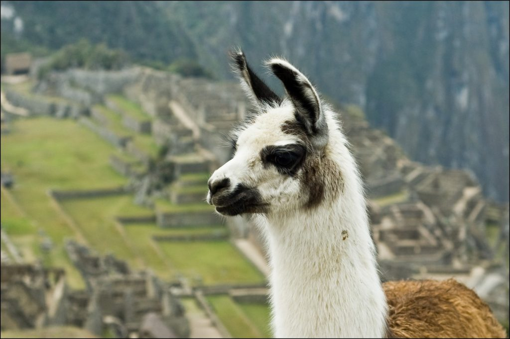

I love turning everyday moments into something a little more magical.
When I edit your photos, my goal isn't to change how things looked,
it's to bring out how they felt. Soft light, rich color, and a touch
of dreaminess are what make my style come alive.
SERVICES

Portraits
Whether it's a milestone or a quiet moment in time, I create
portraits that feel warm, genuine, and full of life: memories
you'll treasure for years to come.
45-90 minute session
Starting at: $250
Birthday Parties
From candid giggles to big surprises, I'll capture the energy
and emotion of your celebration so you can relive the joy long
after the party ends.
1-3 hours
Starting at: $200
Professional Headshots
I create headshots that showcase your personality and
professionalism, the perfect balance of approachability and
confidence to elevate your brand or career.
30-60 minutes
Starting at: $75
Elopements / Micro Weddings
Your day may be small, but the love behind it is infinite. I
focus on the little details, stolen glances, and emotions that
make your wedding day truly yours.
1-3 hours
Starting at: $500
Lifestyle
From cozy mornings to spontaneous adventures, lifestyle sessions
are about capturing you as you are: natural, relaxed, and full
of genuine emotion.
60-90 minutes
Starting at: $200